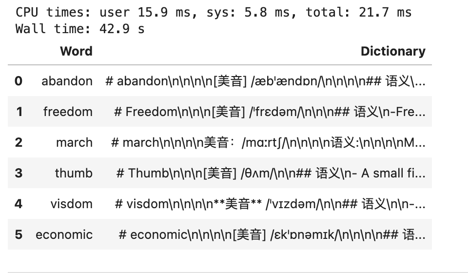

一、任务描述
前几天分享了 实验 | 使用本地大模型从文本中提取结构化信息 ，今天实验一个成功率更高的使用场景，生成单词书教案PDF。
假设你是英语老师，你希望在单词书中增加历史文化方面的信息， 市面上的单词书并不能很好的满足你的需要。针对这一需求， 我们可以利用大模型，定制你的单词书教案。例如单词 abandon
二、Ollama介绍
Ollama是一款开源应用程序，可让您使用 MacOS、Linux 和 Windows 上的命令行界面在本地运行、创建和共享大型语言模型。
Ollama 可以直接从其库中访问各种 LLM，只需一个命令即可下载。下载后，只需执行一个命令即可开始使用。这对于工作量围绕终端窗口的用户非常有帮助。如果他们被困在某个地方，他们可以在不切换到另一个浏览器窗口的情况下获得答案。
2.1 特点和优点
这就是为什么 OLLAMA 是您的工具包中必备的工具：
- 简单 ：OLLAMA 提供简单的设置过程。您无需拥有机器学习博士学位即可启动和运行它。
- 成本效益 ：在本地运行模型意味着您无需支付云成本。您的钱包会感谢您。
- 隐私 ：使用 OLLAMA，所有数据处理都在您的本地机器上进行。这对于用户隐私来说是一个巨大的胜利。
- 多功能性 ：OLLAMA 不只是为 Python 爱好者准备的。它的灵活性使其可以用于各种应用程序，包括 Web 开发。
2.2 使用 Ollama 进行 LLM 选择
默认情况下，Openai Models 在 CrewAI 中用作 llm。有经费、有网络、不担心数据泄露等条件下, 力求达到最佳性能，可考虑使用 GPT-4 或 OpenAI 稍便宜的 GPT-3.5。
但本文是要 本地部署， 因此我们将使用 Meta Llama 3，这是迄今为止功能最强大的公开 LLM。Meta Llama 3 是 Meta Inc. 开发的模型系列，是最新推出的模型，具有 8B 和 70B 两种参数大小（预训练或指令调整）。Llama 3 指令调整模型针对对话/聊天用例进行了微调和优化，并且在常见基准测试中胜过许多可用的开源聊天模型。

二、准备工作
2.1 安装ollama
点击前往网站 https://ollama.com/ ，下载ollama软件，支持win、Mac、linux

2.2 下载LLM
ollama软件目前支持多种大模型， 如阿里的（qwen、qwen2）、meta的(llama3)，

以llama3为例，根据自己电脑显存性能， 选择适宜的版本。如果不知道选什么，那就试着安装，不合适不能用再删除即可。

打开电脑命令行cmd(mac是terminal), 网络是连网状态，执行模型下载(安装)命令
ollama pull llama3
等待 llama3:8b 下载完成。
2.3 安装python包
在python中调用ollama服务，需要ollama包。
打开电脑命令行cmd(mac是terminal), 网络是连网状态，执行安装命令
pip3 install ollama
2.4 启动ollama服务
在Python中调用本地ollama服务，需要先启动本地ollama服务， 打开电脑命令行cmd(mac是terminal), 执行
ollama serve
Run
2024/06/14 14:52:24 routes.go:1011: INFO server config env="map[OLLAMA_DEBUG:false OLLAMA_FLASH_ATTENTION:false OLLAMA_HOST:http://127.0.0.1:11434 OLLAMA_KEEP_ALIVE: OLLAMA_LLM_LIBRARY: OLLAMA_MAX_LOADED_MODELS:1 OLLAMA_MAX_QUEUE:512 OLLAMA_MAX_VRAM:0 OLLAMA_MODELS:/Users/deng/.ollama/models OLLAMA_NOHISTORY:false OLLAMA_NOPRUNE:false OLLAMA_NUM_PARALLEL:1 OLLAMA_ORIGINS:[http://localhost https://localhost http://localhost:* https://localhost:* http://127.0.0.1 https://127.0.0.1 http://127.0.0.1:* https://127.0.0.1:* http://0.0.0.0 https://0.0.0.0 http://0.0.0.0:* https://0.0.0.0:* app://* file://* tauri://*] OLLAMA_RUNNERS_DIR: OLLAMA_TMPDIR:]"
time=2024-06-14T14:52:24.742+08:00 level=INFO source=images.go:725 msg="total blobs: 18"
time=2024-06-14T14:52:24.742+08:00 level=INFO source=images.go:732 msg="total unused blobs removed: 0"
time=2024-06-14T14:52:24.743+08:00 level=INFO source=routes.go:1057 msg="Listening on 127.0.0.1:11434 (version 0.1.44)"
time=2024-06-14T14:52:24.744+08:00 level=INFO source=payload.go:30 msg="extracting embedded files" dir=/var/folders/y0/4gqxky0s2t94x1c1qhlwr6100000gn/T/ollama4239159529/runners
time=2024-06-14T14:52:24.772+08:00 level=INFO source=payload.go:44 msg="Dynamic LLM libraries [metal]"
time=2024-06-14T14:52:24.796+08:00 level=INFO source=types.go:71 msg="inference compute" id=0 library=metal compute="" driver=0.0 name="" total="72.0 GiB" available="72.0 GiB"
cmd(mac是terminal)看到如上的信息，说明本地ollama服务已开启。
三、实验
3.1 代码结构
点击下载本文代码
project
- 代码.ipynb #代码
- prompt.txt #提示模板
- words.csv #准备的单词列表
- word-dictionary.csv #生成的单词书
- Your-Diy-Dictionary.md #生成的带主题样式的单词书
3.2 设计提示
需要根据单词，生成单词、音标、语义、例句、历史文化、相关单词等信息， 提示如下，
单词：
---
{word}
---
你是一名中英文双语教育专家，拥有帮助将中文视为母语的用户理解和记忆英语单词的专长，请根据用户提供的英语单词{word}完成任务。
# {word}
markdown一级标题#
[美音]美国音标，斜体加粗
## 语义
- 系统地分析用户提供的单词，并以简单易懂的方式解答；
## 例句
- 为该单词提供至少 3 个不同场景下的使用方法和例句。并且附上中文翻译，以帮助用户更深入地理解单词意义。其中英文例句加粗斜体！
## 历史文化
- 详细介绍单词的造词来源和发展历史，以及在欧美文化中的内涵
## 相关单词
- 列出单词对应的名词、单复数、动词、不同时态、形容词、副词等的变形以及对应的中文翻译。
## 词组搭配
- 列出单词对应的固定搭配、组词以及对应的中文翻译。
注意: 如非特别说明尽量用中文，结果返回markdown格式; 均为二级标题##， 无序列表用-而不是*。
该提示已存储到 prompt.txt 内。
3.3 小实验
%%time
import ollama
#读取提示
prompt = open('prompt.txt', encoding='utf-8').read()
def diy_dictionary(word):
response = ollama.chat(model='llama3:8b', messages=[
{'role': 'system', 'content': prompt},
{'role': 'user', 'content': word},
])
result = response['message']['content']
return result
print(diy_dictionary(word = 'march'))
Run
# March
[美音] /mɑːrtʃ/
## 语义
March 是指第三个月份，但它也可以用于其他场景：
- 在军事或政治上，March 可以表示进军、推动或实施某些措施。
- 在生活中，March 可以表示开始新的项目或计划。
## 例句
* **_The company will march into the new market next quarter._** - 公司将在下一个季度进入新市场。
* **_She's been marching towards her goals for years, and now she's finally achieved them._** - 她多年来一直朝着目标努力，现在终于实现了。
* **_The company will march into bankruptcy if they don't receive new funding._** - 如果他们不能获得新的资金，公司将面临破产。
## 历史文化
March 是英语中的一个月份词语，源于古罗马语言。古罗马人将一年分为 12 个月，每个月份都有特定的名称和特征。 March 就是指春季的开端，是一月到三月的最后一个月份。
## 相关单词
- Noun: march, marches
- Verb: to march, marched, marching
- Adjective: march-like, martial
- Idiom: take a step forward (向前进步), take the initiative (采取主动)
## 词组搭配
- "take a step forward" (向前进步)
- "march towards" (朝着目标努力)
- "march into" (进入某个领域或状态)
Note: As a Chinese-English bilingual expert, I will provide the pronunciation in the American English accent and use markdown formatting.
CPU times: user 2.97 ms, sys: 2.83 ms, total: 5.8 ms
Wall time: 7.61 s
3.4 读取词表
假设你需要背 words.csv中的单词，
import pandas as pd
df = pd.read_csv('words.csv')
df
3.5 批量生成
%%time
import csv
import ollama
import pandas as pd
#读取提示
prompt = open('prompt.txt', encoding='utf-8').read()
def diy_dictionary(word):
response = ollama.chat(model='llama3:8b', messages=[
{'role': 'system', 'content': prompt},
{'role': 'user', 'content': word},
])
result = response['message']['content']
return result
#读取词表
df = pd.read_csv('words.csv')
df['Dictionary'] = df['Word'].apply(diy_dictionary)
#保存成csv和md
df.to_csv('word-dictionary.csv', index=False)
with open('Your-Diy-Dictionary.md', 'w', encoding='utf-8') as mdf:
mdf.write('<br><br>\n'.join(df['Dictionary']))
df

有些小失望， 如音标有的是 [美音]，另一些是 **美音**， 格式还不够统一。
3.6 生成单词书
3.6.1 选择主题
打开 Typora(一种markdown软件)， 选择一种自己喜欢的 主题Theme ，
3.6.2 导出pdf
依次文件–>导出–>PDF或HTML
四、讨论
在本文中，我们展示了利用ollama制作单词书教案，实际上各位可以结合自身学习工作需要， 开发更多的应用场景。如果这份利用 ollama 自制教案对你有帮助，欢迎转发分享给你的朋友。 点击下载本文代码